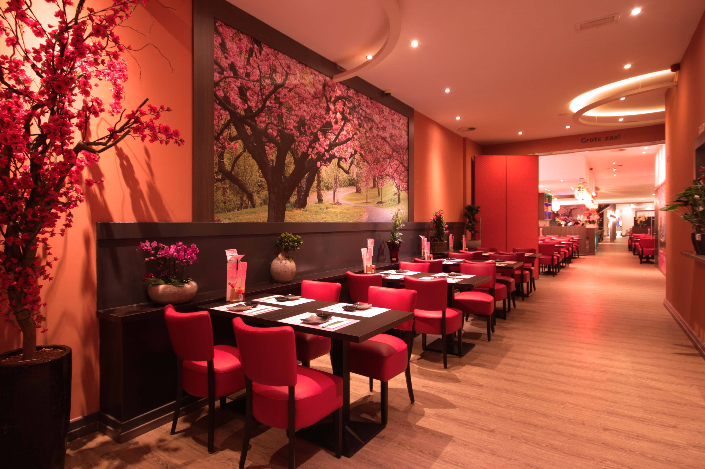
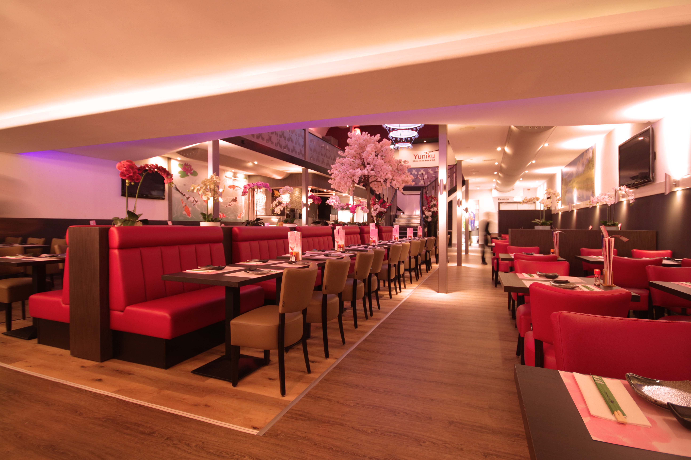

All you can eat sushi & grill · Leiden
Yuniku
Kom genieten van een super avond met heerlijk bereide en verse gerechten. Genoeg keuze, ook voor niet-sushiliefhebbers en vegetariërs.
Reserveren kan alleen telefonisch, vanaf 12:00 uur
Altijd verse sushi
Onbeperkt genieten, dagvers bereid
In april 2017 opende Japans restaurant Yuniku haar deuren in Leiden. Yuniku hanteert het all you can eat concept. Echter, alle ingrediënten zijn dagvers en ieder gerecht wordt met zorg bereid door de gespecialiseerde koks.
Yuniku heeft een uitgebreide kaart, ook voor niet-sushiliefhebbers en vegetariërs is er keus genoeg.

All you can eat & drink
Lunch
13:00 - 17:00 uur
Elke dag. Ook voor kinderen een aangepast tarief.
Diner
Vanaf 16:00 uur
Inclusief dessertbuffet met schepijs, zoetigheden, lekkernijen en fruit, zelfbediend.
Onbeperkt drinken
2 uur arrangement
Frisdranken, tapbier, huiswijnen, koffie en thee zijn inbegrepen. Verlengen met 30 minuten kan.
Actuele prijzen: bel of kom langs. Tijdens de kerstdagen geldt er een aangepast tarief.
Afhalen en thuisbezorgen
Liever thuis genieten van Yuniku? Afhalen is mogelijk, en ook thuisbezorgen. Bestel online, of bel ons voor de afhaallijst met de actuele prijzen.
Bij afhalen kunt u kiezen uit sushi boxen (zie de kaart, tabblad Afhaal) of uit de losse gerechten.
Werken bij Yuniku
Zelfstandig werkend kok I gezocht! Restaurant Yuniku Leiden B.V. is op zoek naar 3 zelfstandig werkende koks I. Geïnteresseerd? Neem nu contact met ons op.
Wij zijn ook op zoek naar medewerkers voor in de bediening en bezorgers vanaf 16 jaar. Tevens zoeken wij bezorgers met een scooterrijbewijs.
Mail info@yuniku-leiden.nlContact
Yuniku Leiden
Stationsweg 19
2312 AS Leiden
071 - 24 086 83
info@yuniku-leiden.nl
Reserveren alleen telefonisch, vanaf 12:00 uur. Reserveer op tijd, want vol is vol!
Route in Google MapsOpeningstijden
- Maandag t/m donderdag
- 13:00 - 22:00
- Vrijdag t/m zondag en feestdagen
- 13:00 - 22:30